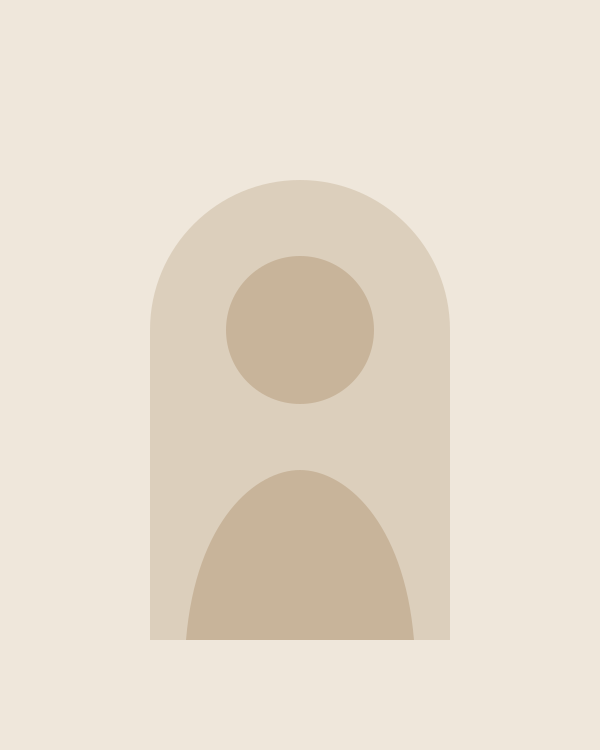

About Bodhi Swan

Artist statement
I make vessels for people who long for warmth, permanence, and human presence in a world increasingly shaped by anonymous production.
A vase is the simplest possible argument for the handmade. It holds water, it holds flowers — but mostly it holds attention. Every vessel that leaves my studio carries the throwing rings, the weight, and the small asymmetries of the morning it was made. Nothing about it could have come off a production line, and that is precisely the point.
Practice
I work in stoneware on the potter's wheel from my studio in Taringa, Brisbane. The forms are slow and traditional — moon jars, bottles, amphorae — and the glazes are mixed in small batches, some from wood ash collected from the studio's own offcuts. Each piece is fired at least twice, and many are the only survivor of a series of attempts.
The work moves between the gallery and the home. Some vessels are made for exhibitions; most are made to live with people — on a table, in a window, holding whatever the season offers.
Get in touch
For available works, commissions, exhibition enquiries, or just to talk about pots — write any time. Studio visits in Brisbane are welcome by appointment.